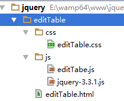
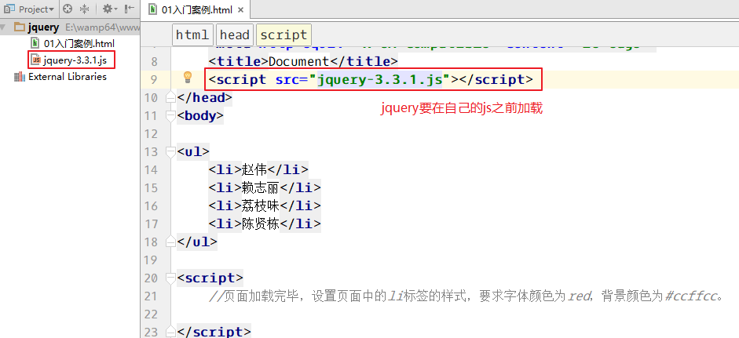
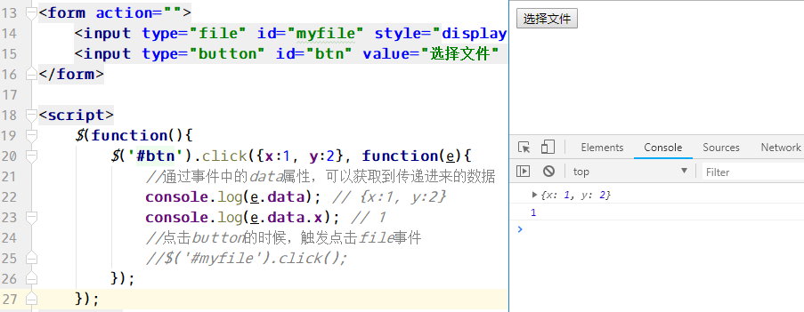
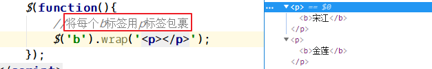

三、jQuery概述
1、什么是jQuery
==jQuery是一个 js 框架。封装了很多实用的方法，解决了浏览器的兼容问题。==
2、特点
write less, do more. 写的更少，做的更多。
1．语法简练、语义易懂、学习快速、丰富文档。
2．jQuery 是一个轻量级的脚本，其代码非常小巧。
3．jQuery 支持 CSS1~CSS3 定义的属性和选择器 //document.querySelector(‘’);
4．jQuery 是跨浏览器的，它支持的浏览器包括 IE 6.0+、FF 1.5+、Safari 2.0+和 Opera 9.0+。
5．能将 JavaScript (行为)脚本与 HTML (结构)源代码完全分离，便于后期编辑和维护。
6．插件丰富，除了 jQuery 自身带有的一些特效外，可以通过插件实现更多功能
小结：写的更少，做的更多，强大的选择器，插件丰富。
3、网站
官方地址为：http://jquery.com/
下载地址：http://www.jq22.com/jquery-info122 该网站内有很多插件的链接
最新版在线手册手册：http://jquery.cuishifeng.cn/
4、发展史及版本介绍
jQuery 是继 Prototype 之后又一个优秀的 JavaScript 框架，由 John Resig 于 2006 年初创建，目前最新版本为 3.3.1。
jquery版本：
1.0.0 1.0.1 1.0.2 1.1.0 1.1.1 1.1.2 1.2.x 1.2.6 1.3.x 1.4.x 1.5.x 1.6.x 1.7.x
1.8.x 1.9.x 1.10.x 1.11.x 2.x 3.x
==2.0版本以后，对IE6/7/8支持不好==。但是市面上这些浏览器基本被淘汰了，所以无差别。
每个jQuery版本都有开发版和产品版，开发版就是带空白和注释的，便于学习；产品版是去掉空白和注释的版本，体积更小，适用于线上。
jQuery有一个非常大的缺点，就是==不向下兼容==。
5、其他类似框架
Prototype：与面向对象的原型继承关键字prototype一致，该框架的特点是功能扩展比较容易。
YUI：该框架可以实现各种页面布局效果。
Extjs : 是目前js框架包里边最为时尚、前沿的。通过该框架包可以实现许多非常绚丽的效果。
该框架可以实现效果之一：页面不同区域进行拖拽效果。由于实现的效果非常“绚丽”、导致其“实用”价值相对略低。
Mootools框架，一款短小精悍的框架，完全采用面向对象的思想进行封装，采用很多流行的技术，核心代码只有8kb，是一款非常好用的JS框架。
jQuery：使用前期，jquery侧重快速找到页面上各种节点。
后期jquery丰富了事件操作、ajax操作、动画效果、DOM操作等等。jQuery官方也提供了很多比较有效或有针对性的插件比如有jQueryUI、jQuery Mobile插件等。
四、快速入门
页面加载完毕，设置页面中的li标签的样式，要求字体颜色为red，背景颜色为#ccffcc。
jQuery使用的大致流程：
- 准备工作（html页面和css样式，目录结构）
- 加载文件（引入css文件、jquery文件，js文件）
- 功能实现（使用jquery实现所需的js功能）
准备工作：

1 | <body> |
加载jquery.js或使用min版的jquery：
==注：jquery必须在使用它之前加载它，所以通常在首个位置加载js文件==
1 | <!--在head区引入css和js文件--> |

jQuery中$()方法：
1 | // $(); 是jquery中封装的一个方法，参数可以是document、可以是dom对象、可以是css选择器；返回值是jQuery对象 |
jQuery中事件绑定语法：
1 | //$(document).事件(事件处理函数); |
找到li，并设置样式：
1 | $(document).ready(function(){ |
三、其它
1、释放$
释放$，意思是不在使用$符合了。$(‘li’)这种写法就不能用了。
jQuery为什么要释放$
有时候，一个页面使用了多个js框架，很多框架都使用$符合当做框架对象的表示。另一个原因，比如自己写了一个名为$的函数，这样的话也会和jQuery中的$冲突，所以要释放$，也就是释放使用$的权利。
jQuery如何释放$?
方法一：使用jQuery代替$符号
1 | jQuery(document).ready(function(){ |
方法二：使用jQuery中的noConflict()方法来释放$
1 | var $2 = jQuery.noConflict(); |
方法三：使用自调用函数
1 | (function($){ |
2、ready和onload的区别
ready是jQuery中的方法，规定了页面加载后要执行的函数。
onload是dom中的事件，表示页面加载后要执行的内容。
区别1：
ready只需要页面中的dom节点加载完毕就可以执行，html标签完全加载完毕就会执行，无关图片是否已经下载。
onload需要整个页面的资源加载完毕才能执行，html标签完全加载完毕，并且图片等页面中的资源也必须加载完毕也能够执行。
区别2：
一个页面只能执行一个onload事件
一个页面可以执行多个ready事件
1 | //下面两个onload事件，后面的会覆盖前面的 |
1 | //下面两个ready方法，都可以执行 |
3、ready方法的简写形式
1 | //下面是ready方法的简写形式 |
4、dom对象和jQuery对象的区别
1、什么是dom对象，什么是jquery对象？
dom对象就是原生js中使用document.getElement….By….()，得到的对象就是dom对象。
jQuery对象指的是使用jQuery方法得到的对象，一般来说就是通过jQuery选择器得到的对象。
1 | //DOM对象 |
2、dom对象和jQuery对象的区别
dom对象可以使用dom方法，而不能使用jquery方法；
jQuery对象可以使用jQuery方法，而不能使用dom中的方法或属性。
1 | //DOM对象 |
3、jQuery对象和dom对象互换
①、将jQuery对象转化为dom对象：
方法是给jQuery加==下标==，或用jQuery对象调用==get==方法。
1 | //jQuery对象 |
②、将dom对象转化为jQuery对象
jQuery对象 等于 ==$(==dom对象==)==;
1 | //DOM对象 |
四、==jQuery中的事件==（重点）
1、普通的事件绑定
普通事件，比如有click、mouseover、change、blur、….
语法：click([[data],fn]);
案例一：事件方法没有参数，可用于传递事件
1 | <form action=""> |
案例二：给事件处理函数传入参数，可以通过事件对象的data属性获取到。

2、on具体用法
1、可以给未来的元素绑定事件（重点）
低于1.7版本，用live事件可以完成给未来的元素绑定事件。
未来的元素指的是页面加载完毕后没有的元素，后来经过dom操作或ajax异步请求临时加到页面上的元素。
下面案例中，点击页面中的p，点击之后能够在页面中再加入一个p。使用click事件，只能点击页面中开始时已经存在的p；使用on就可以点击页面中所有p。
1 | <body> |
2、可以完成事件委托
下面的例子是将div的单击事件委托给了a。事件委托只能委托个它的子元素。
1 | <div> |
3、可以给一个元素绑定多个事件
1 | <p>hello world</p> |
原来不用on的时候，也可以为一个元素绑定多个事件
1 | $('p').click(function () { |
给on传递对象，也可以，对象的每个元素都是一个事件：
1 | $('p').on({ |
4、可以给一个元素绑定多个相同类型的事件
绑定多个相同事件的时候，可以给事件指定一个人名，表示这个事件是由谁来写的。
1 | $(document).on('click.zhangsan', 'p', function(){ |
3、off事件
off在低版本的jQuery中，用unbind来代替。
off和on是对应的，它用于取消事件的绑定。
实际开发中，这个东西很有用，有些时候是需要先取消掉一个元素的所有事件，然后在绑定你要绑定的事件，可以解决一些bug。
1 | <p>123</p> |
4、one事件
给元素绑定的事件，只执行一次。
1 | <p>lalsdfa</p> |
五、==jQuery中的效果==
基本
- show([s,[e],[fn]])
- hide([s,[e],[fn]])
- toggle([s],[e],[fn])
滑动
- slideDown([s],[e],[fn])
- slideUp([s,[e],[fn]])
- slideToggle([s],[e],[fn])
淡入淡出
- fadeIn([s],[e],[fn])
- fadeOut([s],[e],[fn])
- fadeTo([[s],o,[e],[fn]])
- fadeToggle([s,[e],[fn]])
1 | <body> |
自定义
- animate(p,[s],[e],[fn])
- stop([c],[j])
- delay(d,q]) – 延迟执行下一个动画
- finish(queue])
1 | <body> |
六、==jQuery中的Ajax==（重点）
1、$.get方法
专门用于发送get请求的Ajax方法。
语法：
1 | /* |
13get.html:
1 | <body> |
13get.php:
1 | file_put_contents('post.txt', print_r($_GET, true)); |
注意：对于服务器返回的json类型的数据，无需使用JSON.parse()处理，jQuery已经处理好了。
2、$.post方法
$.post用于发送post请求，使用方式和$.get一模一样。
语法：
1 | /* |
3、$.ajax方法
$.ajax()这个方法是综合$.get和$.post的一个方法，另外这个方法可以完整的体现ajax的各种情况。
$.ajax(); 参数要求是一个对象（{}），把请求的各项参数都写到大括号里面。
语法：
1 | $.ajax({ |
4、收集表单内容
jQuery中封装了一个方法serialize() 和 serializeArray()，和FormData获取的数据一致，但是不包含文件域的内容。
14serialize.html：
1 | <body> |
14serialize.php
1 | file_put_contents('post.txt', print_r($_POST, true)); |
5、Ajax提示
数据加载中…
ajax请求开始和结束分别使用ajaxStart和ajaxStop事件监听。
在14serialize.html中，加入loading.gif图：
1 | <img src="loading.gif" style="display: none;" /> |
在14serialize.html中，修改js代码：
1 | $(function(){ |
14serialize.php可以sleep(2)。
1 | file_put_contents('post.txt', print_r($_POST, true)); |
三、==jQuery文档处理==(重要)
3.1、添加节点
1、append：父节点.append(子节点); 给父节点追加一个子节点
2、appendTo：子节点.appendTo(父节点); 把一个子节点追加到一个父节点中
3、prepend：父节点.prepend(子节点); 在一个父节点里开始的位置添加一个子节点
4、after：兄弟节点.before(兄弟节点); 在元素后，添加一个兄弟
5、before：兄弟节点.before(兄弟节点); 在元素前，添加一个兄弟
01添加节点.html
1 | <body> |
3.2、修改节点
replaceWith：旧节点.replaceWith(新节点); 用新的节点替换旧的节点（全部替换）
稍微复杂一点的替换：旧节点.replaceWith(function(){ 返回替换后的结果; }) 用函数处理复杂的替换
02替换节点.html
1 | <body> |
3.3、包裹节点
wrap：里面的节点.wrap(包裹的节点); 将每个查找到的节点分别用包裹的节点包裹

wrapAll：里面的节点.wrapAll(包裹的节点); 将查找到的节点用一个包裹的节点包裹，如果查找的节点不在一起，则强制放到一起，统一包裹。

3.4、删除节点
remove()：待删除的节点.remove(); 将选择的节点删除
empty()：待清空的节点.empty(); 将选择的节点里面的内容清空
1 | <ul> |
3.5、克隆节点
clone()：选择的节点.clone(); 将选择的节点（包括里面的内容）克隆
clone(true)：选择的节点.clone(true); 将选择的节点克隆，并克隆该节点的事件。
1 | <button>click</button> |
3.6、属性中的prop方法
回顾，DOM中设置元素属性的两种方法。
- input.getAttribute(‘value’); //使用于input已经存在的属性
- input.value; //使用于获取input不存在的属性
1 | <input type="text" /> |
jQuery中的attr和getAttribute()比较像，prop和input.value这种语法比较像。
1 | <input type="text" /> |
07反选.html代码：
1 | <button>反选</button> |
1 | $(function(){ |
四、jQuery插件编写
jquery中可以使用下面两种方式来编写插件。
4.1、$.fn.extend();
这种语法，可以一次性写多个插件，需要给extend传递一个对象，对象的每个成员都是一个插件。
1 | $.fn.extend({ |
08自定义插件.html
1 | <p> |
1 | //自定义插件 |
4.2、$.fn.插件名 = function(){}
这种语法，只是定义一个插件。
09自定义插件.html
1 | <p> |
1 | //自定义一个插件 |